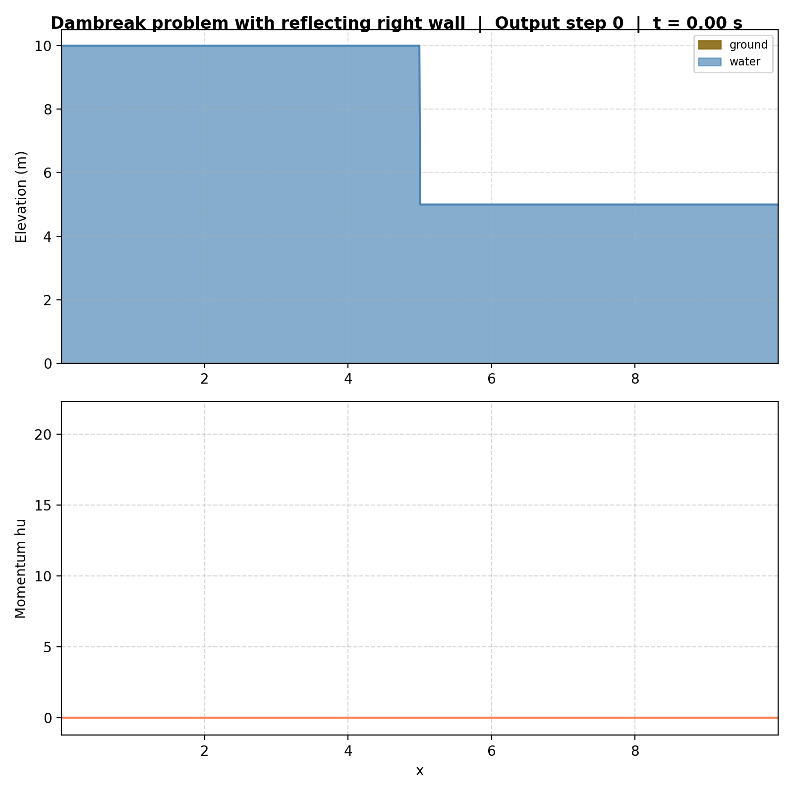
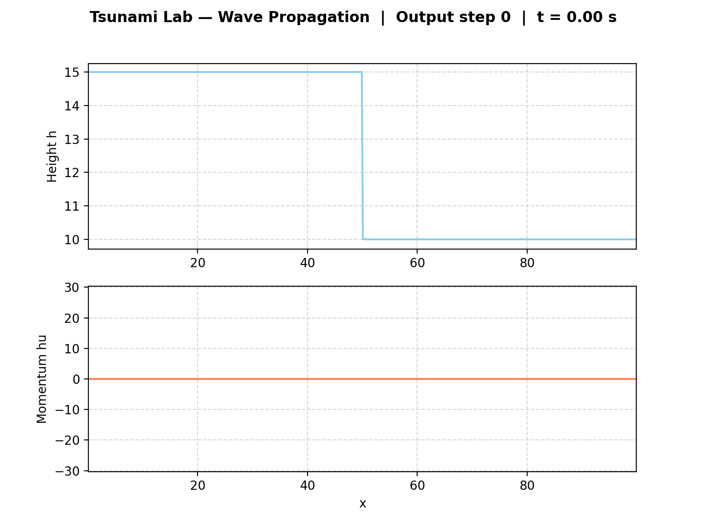
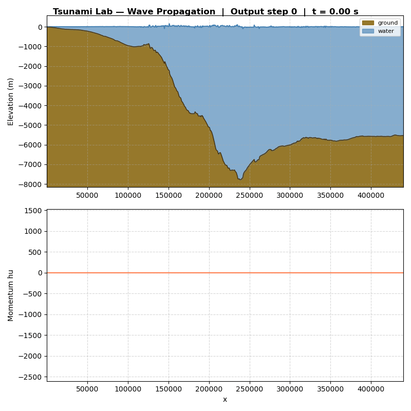
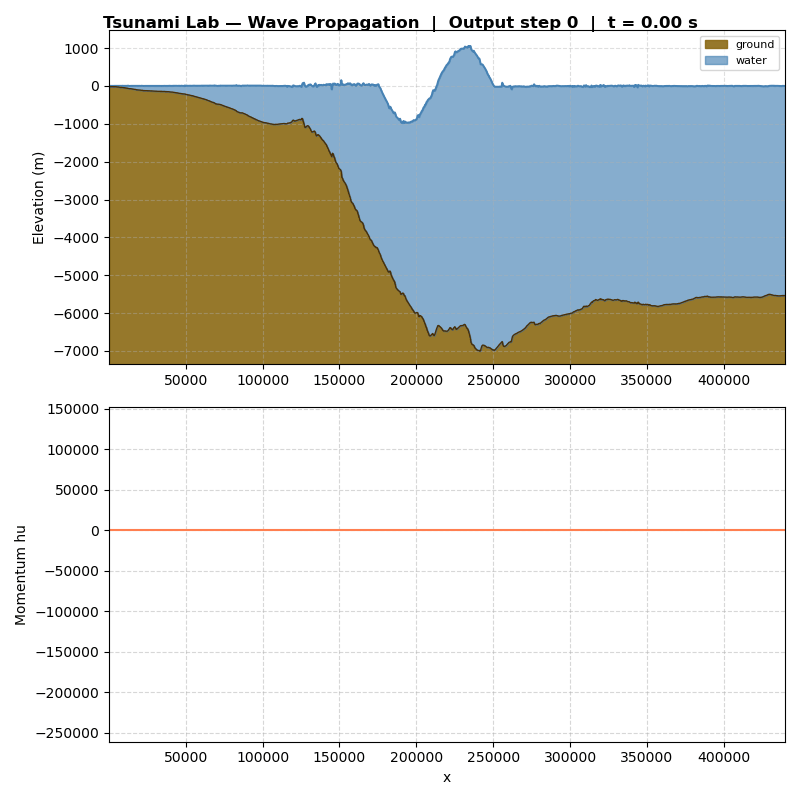

3. Bathymetry & Boundary Conditions
3.2. Reflecting Boundary Conditions
Implementation
Für reflektierende Ränder (3.2.1) haben wir einen
BoundaryCondition-Enum (Outflow / Reflecting) und eine
neue Methode setGhost(left, right) auf WavePropagation1d
hinzugefügt. Eine reflektierende Ghost-Zelle kopiert \(h\) und
negiert \(hu\); eine Outflow-Zelle kopiert beides.
setGhostOutflow() ruft jetzt einfach
setGhost(Outflow, Outflow).
Über die CLI-Flags --bc-left / --bc-right
(outflow / reflecting, Default outflow) wird der
Randtyp pro Seite gewählt.
Für 3.2.2 reicht ein normales DamBreak mit reflektierendem
rechten Rand — die Reflexion erzeugt das gleiche Verhalten wie ein
symmetrisches ShockShock-Problem an der Wand.
Unit Tests
[WaveProp1dReflecting] prüft die drei Randkombinationen
(Reflecting/Reflecting, Outflow/Reflecting,
setGhostOutflow ≡ Outflow/Outflow) und verifiziert, dass
\(h\) kopiert und \(hu\) nur auf reflektierenden Seiten
negiert wird.
Results
Setup: DamBreak 15 10 (Dammposition je Szenario).
Beim Aufprall auf eine Wand kippt das Momentum nicht einfach
um — das Wasser staut sich kurz auf (\(u \to 0\)), dann läuft
ein neuer Shock mit erhöhter Wasserhöhe zurück.
Einseitige Reflexion (rechter Rand):
{kind=link}

Beidseitige Reflexion (Wellen bouncen zwischen beiden Wänden):
{kind=link}

3.3. Hydraulic Jumps
TODO Add visualizations
Subcritical Flow
The subcritical setup uses a parabolic hump over the interval \(x \in (8, 12)\) on the domain \((0, 25)\) with bathymetry
and initial conditions \(h(x, 0) = -b(x)\), \(hu(x, 0) = 4.42\).
Maximum Froude number at \(t = 0\)
The Froude number is defined as
Since \(hu = 4.42\) is constant and \(h = -b(x)\), the Froude number is maximized where \(h\) is minimal, i.e., at the hump peak \(x = 10\) where \(h(10) = 1.8\).
Since \(F_{\max} < 1\) everywhere, the flow remains subcritical throughout the entire domain at \(t = 0\).
In the steady state the f-wave solver converges to a solution where the free surface \(\eta = h + b\) is approximately constant and the momentum \(hu \approx 4.42\) is preserved across the domain, consistent with conservation of mass in a stationary 1D flow.
Supercritical Flow and Hydraulic Jump
The supercritical setup uses the same domain with bathymetry
and initial conditions \(h(x, 0) = -b(x)\), \(hu(x, 0) = 0.18\).
Maximum Froude number at \(t = 0\)
At the hump peak \(x = 10\) the water height is \(h(10) = 0.13\). Away from the hump the water height is \(h = 0.33\). The Froude numbers are:
The flow transitions from subcritical (\(F < 1\)) in the flat regions to supercritical (\(F > 1\)) over the hump peak. The location of the maximum Froude number is \(x = 10\) with \(F_{\max} \approx 1.23\).
Hydraulic jump and failure to converge
In the supercritical case a stationary shock — a hydraulic jump — forms downstream of the hump where the flow transitions back from supercritical to subcritical. Analytically, conservation of mass in a stationary 1D flow without sources requires \(hu = \text{const} = 0.18\) everywhere.
The f-wave solver, however, fails to converge to this analytical solution. After running the simulation to \(t = 200\) the momentum \(hu\) is not constant across the domain: a clear discontinuity persists near the hydraulic jump location. Refining the grid does not resolve this discrepancy — the solver does not converge to the expected constant momentum, demonstrating a known limitation of the standard f-wave approach for supercritical flows with hydraulic jumps.
3.4. 1D Tsunami Simulation
Bathymetry Data Extraction (3.4.1)
We extract bathymetry data from the GEBCO 2025 Grid using GMT.
The workflow is automated in scripts/extract_bathymetry.sh:
./scripts/extract_bathymetry.sh tohoku --map --pdf
The script downloads the GEBCO data if not present, cuts the specified
region with gmt grdcut, extracts a 1D profile via gmt grdtrack,
and converts the output to CSV. Optionally it generates a map with
coastlines and the profile line overlaid.
For the domain between \(p_1 = (141.024949, 37.316569)\) and
\(p_2 = (146.0, 37.316569)\) at 250 m sampling, the extraction
yields 1903 data points. The profile CSV is stored in ressources/,
map visualizations go to simulations/visualizations/<name>/.
CSV Reader (3.4.2)
We extended tsunami_lab::io::Csv with a static read method that parses
bathymetry CSV files (format: longitude,latitude,distance,bathymetry).
The reader skips comment lines (#) and the header, converts the distance
column from km to metres, and returns raw arrays for position and bathymetry.
TsunamiEvent1d Setup (3.4.3)
The new setup setups::TsunamiEvent1d takes a CSV file path as input and
initializes the simulation according to Eq. 3.4.1:
with \(\delta = 20\,\text{m}\) to ensure a minimum water height everywhere, avoiding numerical issues from dry cells. The artificial displacement is:
The setup uses linear interpolation between CSV data points for arbitrary query positions.
Simulation Results (3.4.4)
We run the simulation with:
./build/tsunami_lab -n 1000 -d 440000 -t 3600 \
--bc-left reflecting \
-p TsunamiEvent1d ressources/tohoku_bathymetry_profile.csv
With the default displacement amplitude of 10 m, the wave is barely visible in the visualization. This is physically expected: in the open ocean (depth \(\approx 5000\,\text{m}\)), a tsunami wave is only a few metres high. The wave-to-depth ratio is on the order of \(10/5000 = 0.2\%\), making it nearly invisible at the scale of the full bathymetry cross-section.
{kind=link}

Modified Displacement (3.4.5, optional)
Increasing the displacement amplitude by a factor of 1000 (i.e., \(d_{\max} = 10000\,\text{m}\)) produces a clearly visible wave. The wave propagates in both directions from the displacement region: the rightward wave leaves the domain through the outflow boundary, while the leftward wave travels toward shore and reflects off the left boundary (reflecting BC).
{kind=link}

The higher displacement demonstrates the expected behavior: larger initial perturbations produce proportionally stronger waves, and the reflecting boundary correctly prevents water from leaving the domain at the coast.
Individual Contributions
Yannik Köllmann: Implementation of 3.4 (bathymetry extraction script, CSV reader,
TsunamiEvent1dsetup, simulation runs and visualizations).Jan Vogt: Implementation von 3.2.1 (
BoundaryCondition,setGhost, CLI-Flags,[WaveProp1dReflecting]-Tests), Setup und Visualisierungen für 3.2.2, sowie diese Doku.Mika Brückner: Integration of bathymetry support into the project (3.1). Implementation of subcritical and supercritical flow setups (3.3) and related visualizations. Computation of maximum Froude numbers and analysis of hydraulic jump convergence issues (3.3.1 / 3.3.3).